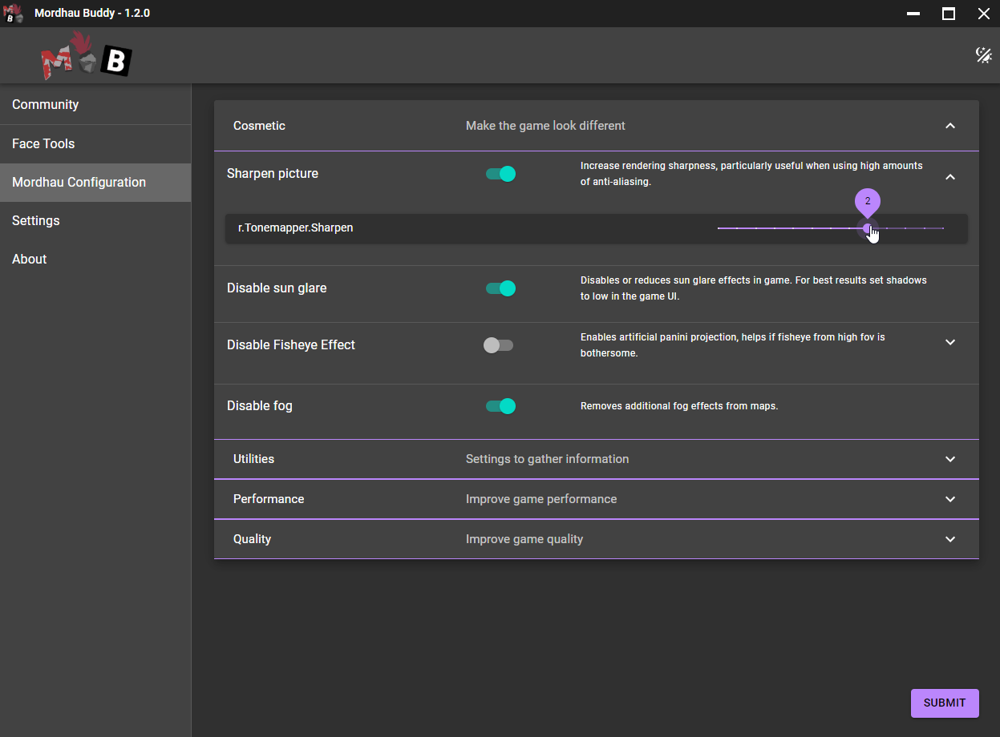

Mordhau Config
The mordhau config tab has a list of commonly set confguration items that cannot be managed directly through the game UI. Many people either have to go and edit the file everytime they want to change a value, or type it into the console each time the game is launched. MordhauBuddy will set these values for you in your Engine.ini and GameUserSettings.ini as well as back the data up. This makes making changes to settings significantly less cumbersome, as well as let you discover other options you may not be aware of, such as disabling sun glare, or in-game fog. Values that have a more subject setting will have sliders available so you can adjust them to your liking.
